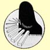
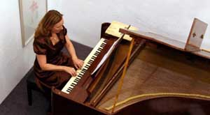
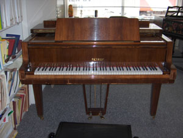

Informatie
over de lessen voor piano en klavecimbel
Tatiana Loginova - piano lerares -
klassieke
pianoles
1) algemene informatie2) lesgeld
3) projecten
4) adresgegevens
5) over de lerares
6) instrumenten
7) links
8) terug naar de startpagina

Algemene informatie
De wijze van lesgeven is volgens de traditie van de Russische pianoleerschool. De methode is gericht op ieders individuele niveau en is niet afhankelijk van de leeftijd van de leerling. De lessen worden individueel gegeven, deze vinden plaats op de dag en bij uitzondering in de avond. De lokatie voor de lessen, is bij mij aan huis. De lessen starten in september, maar tussendoor aanmelden kan in overleg. Tijdens de lessen wordt ook aandacht besteed aan muziektheorie en techniek. Er worden twee openbare leerlingenconcerten per jaar gegeven, waarbij de mogelijkheid wordt geboden met andere instrumenten samen te spelen. De lerares geeft zelf regelmatig soloconcerten en speelt ook samen met andere musici.
| Lesprijzen
- 2025 |
|
| Leerlingen jonger dan 21 jaar Zij betalen geen BTW € 28,00 per les 30 min. € 41,00 per les 45 min. |
Leerlingen van 21 jaar en ouder Zij betalen een BTW bedrag van 21 % op de lesprijs € 50,00 per les 45 min. + BTW 21 % € 60,00 per les 60 min. + BTW 21 % Deze prijzen voor volwassen zijn exclusief 21 % BTW |
| Het lesgeld dient in alle
termijnen bij vooruitbetaling te worden voldaan. |
|
| Exta Informatie: De lessen lopen samen met het schooljaar. Belangstellenden kunnen een betaalde proefles aanvragen. of een betaalde proefperiode van 10 lessen nemen. De pianolessen worden gegeven op een Yamaha vleugel en piano. Pianoles Haarlem, ook voor leerlingen in Heemstede, Overveen en Bloemendaal. |
|
Projecten, eerder cursusjaar
C.Debussy, pianowerken. Voor gevorderde leerlingen.
Adresgegevens
Tatiana Loginova
Wagenweg 62
2012NG Haarlem
Mobiel: 06-18850678
Tatiana Loginova, geboren in Rusland, studeerde aan de speciale muziekschool voor getalenteerde kinderen in St. Petersburg, hierna heeft zij haar studie als concertpianiste voortgezetaan het Rimsky-Korsakov conservatorium bij prof. Perelman. Haar studie, tevens voor begeleider en muziekdocente, voltooide zij cumlaude in 1985. Van 1987 tot 1994 gaf zij les aan de Muziek akademie van Tallinn in Estland en maakte zij concertreizen die haar met veel succes naar de Europese concertpodia voerden. Van 1995 tot 1997 studeerde Tatiana aan het Sweelink concervatorium te Amsterdam bij Anneke Uittenbosch klavecimbel en fortepiano bij Stanley Hoogland. Tatjana gaf concerten en masterclasses in Rusland, Oekraïne, Estland, Denemarken, Engeland, Duitsland en Nederland. Nadat zij zich geruime tijd met uitvoeringen op klavecimbel en pianoforte bezig hield, geeft zij sinds enige tijd haar voorliefde voor de moderne vleugel weer voorrang.

Het is mogelijk, voor mijn leerlingen te bemiddelen bij de aankoop van een instrument: piano, vleugel, spinet, klavecimbel, pianoforte.
Links
Pianoconcerten.nl
Deze agenda vermeldt alleen klassieke solo - pianoconcerten (pianorecitals). Concerten met ensembles waarbij voor 50% of meer solo piano wordt gespeeld kunnen echter ook worden opgenomen.
Bladmuziekwijzer.nl
Dit bedrijf biedt gebruikte bladmuziek aan, hierna volgt hun informatie:
Sinds kort zijn wij van start gegaan met onze website, waar wij gebruikte bladmuziek aanbieden tegen aantrekkelijke prijzen. Het betreft voornamelijk bladmuziek voor piano, van beginners tot (ver) gevorderden, quatre-mains en ensembles.
Terug
 1996 -------
Loginova, Pianolessen Pianoles Klavecimbelles Muziekles - Pianolerares,
Pianodocent ------ 2024
1996 -------
Loginova, Pianolessen Pianoles Klavecimbelles Muziekles - Pianolerares,
Pianodocent ------ 2024